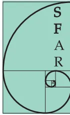

en collaboration avec :
Société de réanimation de langue française
Club d'anesthésie ORL
Club d'anesthésie en obstétrique
Association des anesthésistes-réanimateurs pédiatriques
d'expression française
Samu de France
Société française de médecine d'urgence
Texte court
2006
Anne-Marie Cros (Bordeaux)
Bruno Bally (Grenoble), Jean-Louis Bourgain (Villejuif), Jean Chastre (Paris), Xavier Combes (Créteil), Pierre Diemunsch (Strasbourg), Marc Fischler (Suresnes), Daniel Francon (Marseille), Yann Hervé (Bordeaux), Samir Jaber (Montpellier), Ollivier Laccourreye (Paris), Olivier Langeron (Paris), Annick Legras (Tours), François Lenfant (Dijon), Bruno Marciniak (Lille), Gilles Orliaguet (Paris), Didier Pean (Nantes), Patrick Ravussin (Sion), Martine Richard (Grenoble), François Sztark (Bordeaux).
Cette conférence d'experts est une réactualisation de la conférence d'experts organisée par la Société française d'anesthésie et de réanimation (Sfar) en 1996. Elle a été organisée et s'est déroulée conformément à la méthodologie développée par la Sfar. Le président de cette conférence a été désigné par le comité des référentiels et a constitué le groupe d'experts en collaboration avec ce comité. Les experts ont travaillé en sous groupes pour chaque question posée. Ils ont élaborés des recommandations après analyse et synthèse de la littérature médicale. Les références ont été analysées avec la grille de classement établie par le comité des référentiels. Les recommandations ont été discutées en séance plénière et validées par tous les experts soit à l'unanimité soit à la majorité des deux tiers.
Les lettres entre parenthèses représentent les niveaux de recommandations résultant de l'analyse de la littérature.
Une intubation est difficile si elle nécessite plus de deux laryngoscopies et/ou la mise en œuvre d'une technique alternative après optimisation de la position de la tête, avec ou sans manipulation laryngée externe.
Une ventilation au masque est difficile : 1) s'il est impossible d'obtenir une ampliation thoracique suffisante ou un volume courant supérieur à l'espace mort (3 ml/kg), un tracé capnographique identifiable, de maintenir une ; 2) s'il est nécessaire d'utiliser l'oxygène rapide à plusieurs reprises, d'appeler un autre opérateur ; 3) si la pression d'insufflation est supérieure à
Le dépistage de l'intubation difficile (ID) et de la ventilation au masque difficile (VMD) doit être systématique et documenté chaque fois qu'une intubation est prévue ou probable (consultation d'anesthésie, admission en réanimation).
Dans les conditions d'urgence, le dépistage est plus difficile mais il doit être réalisé chaque fois que cela est possible.
L'âge supérieur à 55 ans, un index de masse corporelle (IMC) , l'absence de dents, la limitation de la protusion mandibulaire, la présence d'un ronflement et d'une barbe ont été retrouvés comme facteurs prédictifs d'une VMD (grade C). La présence de deux de ces facteurs est prédictive d'une VMD. Le risque d'ID difficile est multiplié par 4 chez les patients ayant eu une VMD (grade D).
Une distance thyromentonnière < 6 cm et la présence d'un ronflement sont des critères prédictifs d'une ventilation impossible (grade C).
Les critères suivants sont prédictifs d'une ID, il est recommandé de les rechercher : antécédents d'ID, classe de Mallampati > 2, distance thyromentonnière (DTM) < 6 cm et ouverture de bouche < 35 mm (grade C). Il est conseillé également de rechercher la mobilité mandibulaire (test de morsure de lèvre), mobilité du rachis cervical (angle fait par la tête en extension maximum sur le cou et en flexion maximum supérieur à 90°) (grade E).
Certaines situations cliniques augmentent le risque d'ID : un IMC > 35 kg/m2, un syndrome d'apnées obstructives du sommeil (SAOS) avec tour de cou > 45,6 cm, une pathologie cervico-faciale (grade D) et un état prééclampgique (grade E).
Chez l'enfant la classification de Mallampati n'est pas validée (grade E). Les critères prédictifs d'une ID sont une dysmorphie faciale, une DTM < 15 mm chez le nouveau-né, 25 mm chez le nourrisson et < 35 mm chez l'enfant de moins de 10 ans, une ouverture de bouche inférieure à trois travers de doigt de l'enfant et un ronflement nocturne avec ou sans SAOS (grade E).
Les critères recommandés doivent être recherchés dans la mesure du possible, mais ils sont mal adaptés au contexte de l'urgence. Certaines situations doivent alerter l'opérateur : un traumatisme cervico-facial (traumatisme du rachis, traumatisme facial), une pathologie ORL (cervico-faciale ou oropharyngolaryngée) et la présence de brûlures faciales (grade E).
Tous les patients doivent être préoxygenés, plus particulièrement quand une ID et/ou une VMD sont prévues (grade C) et quand les patients sont à risque de désaturation pendant l'intubation. Les facteurs de risque de désaturation pendant l'intubation sont : une intubation en urgence avec induction en séquence rapide (ISR), une VMD prévisible, une ID prévisible, l'obésité et la grossesse, le nourrisson et le nouveau-né, l'enfant classe ASA 3 ou 4, l'enfant ronfleur et l'enfant avec infection des voies aériennes supérieures (VAS). Enfin le sujet âgé et le bronchopathe chronique sont également à risque de désaturation (grade D).
L'obèse, la femme enceinte, le nourrisson, l'enfant atteint d'une infection des VAS et l'insuffisant respiratoire peuvent désaturer malgré une préoxygenation bien conduite (grade A).
Chez l'obèse, l'enfant et la femme enceinte, en raison de la diminution de la CRF, la dénitrogénéation est plus rapide mais le temps d'apnée est plus court (grade B).
Les manœuvres de préoxygenation doivent être réalisées avec un masque étanche, un débit de gaz suffisant et un ballon de taille adaptée (grade D). La surveillance de la FeO2 est recommandée, en anesthésie, de même que le monitoring de la SpO2 (grade E).
Il est recommandé de réaliser la préoxygenation à FiO2 à 1 pendant trois minutes chez l'adulte (grade B) et deux minutes chez l'enfant (grade C), ou en demandant au patient de réaliser huit respirations profondes avec un débit de 10 l/min d'oxygène pendant une minute (grade C).
Chez la femme enceinte, la technique de quatre capacités vitales pendant 30 secondes est une alternative à la préoxygenation standard (grade D).
Chez l'obèse, la position demi-assise est recommandée pendant l'oxygénation (grade D).
Chez l'insuffisant respiratoire il est recommandé de prolonger la préoxygenation sous contrôle de la (grade D).
Après induction, la pose d'une canule oro-pharyngée est recommandée, car elle facilite la ventilation au masque (grade C).
L'utilisation du circuit principal est recommandée, car il permet la surveillance des gaz expirés, de la spirométrie et des pressions d'insufflation (grade D).
La ventilation au masque en pression ou en volume contrôlés, en utilisant le circuit principal du respirateur, est une pratique à encourager (grade D).
Il est recommandé de ventiler un patient dont la chute en dessous de 95 %, même s'il est à estomac plein (grade D).
Une sédation ou une analgésie associée à une ALR ou une AL améliorent le confort du patient et les paramètres hémodynamiques (grade E).
Le maintien de la ventilation spontanée est un impératif, principalement si la ventilation au masque est prévue difficile (grade E).
La sédation ou l'analgésie mal conduites peuvent rendre la prise en charge des VAS plus difficile (grade E).
Le propofol et le rémifentanil administrés de façon continue sont les agents de choix (grade C). Ils doivent être titrés et l'administration à objectif de concentration est recommandée (grade C). La concentration initiale est basse puis augmentée progressivement par palier jusqu'à obtention de l'effet recherché (grade C). Les concentrations cibles sont fonction des modèles pharmacocinétiques utilisés. Pour le propofol une concentration cible au site d'action de 2 µg/ml peut être recommandée avec le modèle de Schnider ; elle est de 1,5 ng/ml pour le rémifentanil avec le modèle de Minto-Schnider (grade D). L'administration conjointe de ces deux agents est déconseillée en raison de la majoration du risque d'apnée (grade C).
L'anesthésie par inhalation avec le sévoflurane est la méthode de référence chez l'enfant. Elle représente également une alternative chez l'adulte (grade D) ; la doit être titrée en fonction de l'effet recherché (grade E). Le risque de cette technique est la perte de la liberté des VAS qui compromet l'administration du sévoflurane (grade E).
L'anesthésie locale peut être réalisée soit avec des techniques étagées, soit avec un aérosol de lidocaïne à 5 % avec un débit d'oxygène de 5 l/min (grade D). La dose maximale est de 4 à 6 mg/kg chez l'adulte et 3 mg/kg chez l'enfant. L'anesthésie topique du nez doit être associée à un vasoconstricteur.
Les seuls blocs recommandés sont le bloc bilatéral des nerfs laryngés et le bloc trachéal par injection de lidocaïne au travers de la membrane intercrico-thyroïdienne (grade E).
L'anesthésie générale peut être envisagée selon le contexte (grade D). Le choix ou non du maintien de la ventilation spontanée doit tenir compte de la possibilité de ventiler au masque et d'utiliser les techniques d'oxygénation recommandées (grade E). La profondeur de l'anesthésie et le relâchement musculaire doivent être suffisants pour optimiser les conditions d'intubation (grade D). L'anesthésie doit être rapidement réversible (grade E).
Le propofol et le sévoflurane sont les agents de choix, en l'absence de risque d'obstruction des VAS (grade C). L'adjonction d'un morphinique optimise les conditions d'intubation mais expose à un risque de dépression respiratoire et d'apnée (grade C). L'administration des agents à objectif de concentration est recommandée (grade C).
Si la curarisation s'avère nécessaire, seule la succinylcholine peut être recommandée en l'absence de contre-indication (grade C).
Une profondeur d'anesthésie et un relâchement musculaire suffisants doivent être maintenus le temps que les manœuvres d'intubation sont poursuivies (grade E).
L'anesthésie par inhalation avec le sévoflurane est la technique de référence face à une ID prévisible (grade D). La mise en place d'une voie veineuse avant l'induction est conseillée (grade E). La profondeur de l'anesthésie et le relâchement musculaire doivent être suffisants pour prévenir le risque de laryngospasme (grade E).
En dehors de l'arrêt cardio-respiratoire, l'intubation doit être réalisée après anesthésie générale (grade E). La persistance d'une réactivité laryngée entraîne une dégradation des conditions d'intubation et augmente le risque de complications graves (grade E).
L'anesthésie doit être réalisée selon une induction en séquence rapide (grade B). L'étomidate et la kétamine sont recommandés (grade D). Le curare de choix est la succinylcholine en l'absence de contre-indication (grade E).
L'anesthésie doit être maintenue et approfondie si le patient présente des signes de réveil.
Une nouvelle injection de succinylcholine peut être réalisée si le patient présente des signes de décurarisation qui compromettent l'intubation (grade E).
Le choix des dispositifs constituant un chariot d'ID doit tenir compte des algorithmes de l'équipe d'anesthésie et doit permettre de faire face à toutes les situations. La formation de tous les opérateurs susceptibles de les utiliser est impérative (grade E).
Une lame métallique doit être préférée à une lame plastique à usage unique en cas de laryngoscopie prévue difficile ou d'intubation en urgence (grade C).
Pour réaliser une oxygénation transtrachéale, il est recommandé de n'utiliser que du matériel conçu et validé pour cet usage (grade E).
L'emploi de matériel à usage unique doit être privilégié à niveau de performance technique et de sécurité d'utilisation équivalents à celui des dispositifs réutilisables.
Le matériel de prise en charge d'une ID doit être regroupé dans un chariot ou dans une valise facilement identifiable et utilisable à tout moment du jour et de la nuit (grade E). La composition du chariot d'ID recommandée par le groupe d'experts figure en annexe.
En pédiatrie, le matériel doit être adapté à la taille de l'enfant, chez le nourrisson la lame droite de Miller peut être utile. Le masque laryngé pour intubation (MLI type Fastrach) ne peut être utilisé qu'à partir de 30 kg. L'oxygénation transtrachéale et la cricothyroïdomie ne sont pas conseillées chez le très jeune enfant (grade E).
Un set de cricothyroïdomie est conseillé dans la mallette d'ID en médecine d'urgence (grade E).
L'élaboration d'algorithmes s'inscrit dans une démarche de maîtrise du risque. L'élaboration d'une stratégie de prise en charge permet d'anticiper une situation critique. Cette stratégie de prise en charge est centrée sur le maintien de l'oxygénation du patient. Face à une ID prévue, il faut anticiper les éventuelles difficultés d'oxygénation et s'assurer de la disponibilité des moyens pour la maintenir pendant les manœuvres d'intubation : ventilation au masque et/ou techniques de secours. Des algorithmes décisionnels d'intubation et d'oxygénation ont été élaborés. Ils permettent la prise en charge de ces différentes situations cliniques : ID prévue ou non et VMD. Ils sont présentés en annexe.
Plusieurs points importants doivent être soulignés. Le réveil du patient ou le report de l'intervention doivent être envisagés à chaque étape (grade E). L'appel à l'aide dès les premières étapes de l'algorithme est recommandé (grade E). Il est recommandé de ne pas s'obstiner à intuber et de passer à l'étape suivante après deux échecs et de ne pas oublier le maintien de l'oxygénation entre les tentatives (grade E).
Il n'est pas recommandé d'envisager la pratique d'une laryngoscopie pour évaluer la difficulté réelle d'une ID prévue sans avoir planifié une stratégie de prise en charge (grade E). De même il n'est pas recommandé d'envisager la réalisation d'une ALR sans avoir prévu une alternative en cas d'échec, le contrôle des voies aériennes en cas de difficulté d'oxygénation et le report de l'intervention si les conditions requises à la réalisation d'une sédation ne sont pas réunies.
Il est recommandé d'informer le patient de la survenue d'une difficulté d'intubation ou de ventilation au masque et de le mentionner dans le dossier médical.
Dans le cadre de l'urgence, l'ISR avec manœuvre de Sellick est la technique de référence (grade C). La cricothyroïdomie est préférée à l'oxygénation transtrachéale (grade D). L'intubation en obstétrique pose le double problème du risque d'inhalation et du risque de souffrance fœtale. L'oxygénation doit être privilégiée (grade D).
En réanimation, l'oxygénation doit être favorisée même au détriment du risque d'inhalation (grade E). Le fibroscope est recommandé en présence d'une difficulté prévisible d'intubation (grade E). Dans ce contexte, la ventilation non invasive peut être intéressante (grade D).
Les complications respiratoires représentent la cause la plus fréquente des réintubations en post-opératoire (grade C). Les complications de l'extubation sont liées le plus souvent à une obstruction mécanique des VAS ou à une dysfonction respiratoire (grade D).
Après une ID, l'extubation doit être réalisée en présence d'un médecin senior (grade E).
Les critères conventionnels d'extubation doivent être respectés particulièrement un réveil complet et une décurarisation confirmée par un rapport T4/T1 supérieur à 90 % (grade D).
Le test de fuite n'est pas prédictif d'une extubation à risque en anesthésie (grade D).
La mise en place préventive d'un guide échangeur n'est pas justifiée sauf si l'accès aux voies aériennes est rendu difficile par l'acte opératoire (grade E).
Tous les praticiens susceptibles de réaliser une intubation doivent se former aux techniques recommandées dans les algorithmes de prise en charge (grade E).
La formation par simple compagnonnage ne doit pas débuter sur le patient. La formation doit comporter un apprentissage sur mannequin et ensuite un apprentissage sur patient (grade E). L'entretien des connaissances peut faire appel à la formation sur mannequin.
L'enseignement de certaines techniques comme l'utilisation d'un ML ou l'intubation avec un MLI peut se faire au bloc opératoire après apprentissage sur mannequin (grade E). D'autres techniques comme l'oxygénation transtrachéale et la fibroscopie ont des indications cliniques plus limitées. Il peut être fait appel à la collaboration avec d'autres spécialistes comme les pneumologues ou les ORL (grade E).
La conférence d'experts répond à la majorité des problèmes et des situations qui peuvent se présenter en pratique quotidienne. Il demeure néanmoins certaines situations où le jugement clinique doit prévaloir et où le choix d'une stratégie de prise en charge se fait en terme de bénéfices/risques. L'évolution des techniques a permis de simplifier la gestion d'une ID. L'élaboration d'algorithmes par une équipe est la pierre angulaire de la prise en charge à condition que les techniques soient connues de tous et réalisables à tout moment. La prise en charge d'une ID passe par l'élaboration d'une stratégie au préalable.
SFAR
2006
graph TD
Start([INTUBATION DIFFICILE PREVUE]) --> Eval[Evaluer la difficulté prévisible de la ventilation au masque facial]
Eval --> O2[Prévoir le maintien de l'oxygénation
(Masque laryngé ou Fastrach utilisables ? Abord trachéal possible ?)]
O2 --> Anesth[Choix des techniques d'anesthésie :
apnée ou ventilation spontanée ?]
Anesth --> Strat{Orientation stratégique}
Strat --> Intub[ALGORITHME DE L'INTUBATION]
Strat --> O2gen[ALGORITHME DE L'OXYGENATION]
The flowchart for anticipated difficult intubation (SFAR 2006) starts with 'INTUBATION DIFFICILE PREVUE' in an oval. It leads to a rectangular box 'Evaluer la difficulté prévisible de la ventilation au masque facial'. This is followed by 'Prévoir le maintien de l'oxygénation (Masque laryngé ou Fastrach utilisables ? Abord trachéal possible ?)' in another rectangular box. Then 'Choix des techniques d'anesthésie : apnée ou ventilation spontanée ?' in a third rectangular box. A diamond 'Orientation stratégique' branches into two rectangular boxes: 'ALGORITHME DE L'INTUBATION' and 'ALGORITHME DE L'OXYGENATION'.
SFAR
2006
Aide prévue
graph TD
Start([INTUBATION
ventilation au masque efficace]) --> Apnee{Apnée possible}
Start --> Spontan{Ventilation Spontanée}
Apnee --> Laryng[Laryngoscopie 2 essais –
optimisation exposition
- long mandrin béquillé]
Laryng --> Reveil1([Réveil])
Laryng --> Intub1([Intubation])
Laryng --> Echecl1([Echec])
Echecl1 --> Fastrach[FRASTRACH
Masque laryngé enfant <30 kg]
Spontan --> Fastrach
Spontan --> Fibro[FIBROSCOPE]
Fastrach --> Reveil2([Réveil])
Fastrach --> Echecl2([Echec])
Echecl2 --> Fibro
Fibro --> Echecl3([Echec])
Echecl3 --> Reveil3([Réveil
Masque laryngé/Fastrach
Abord trachéal])
Fibro --> Intub2([Intubation])
The flowchart for anticipated intubation with mask ventilation (SFAR 2006) starts with 'INTUBATION ventilation au masque efficace' in an oval. It branches into two decision diamonds: 'Apnée possible' and 'Ventilation Spontanée'. 'Apnée possible' leads to 'Laryngoscopie 2 essais – optimisation exposition - long mandrin béquillé' in a rectangular box, which then leads to 'Réveil' and 'Intubation' ovals, and 'Echec' (failure) in an oval. 'Echec' leads to 'FRASTRACH Masque laryngé enfant <30 kg' in a rectangular box, which leads to 'Réveil' and 'Intubation' ovals, and 'Echec' in an oval. 'Echec' leads to 'FIBROSCOPE' in a rectangular box, which leads to 'Réveil (Masque laryngé/Fastrach Abord trachéal)' and 'Intubation' ovals, and 'Echec' in an oval.
OXYGENATION
ventilation au masque inefficace - échec intubation
SFAR 2006
= Appel à l'aide dans tous les cas
FRASTRACH / DSG*
Masque laryngé enfant <30 kg
Réveil Intubation
O2 transtrachéal
Déconseillé chez le nourrisson
Echec
Contre Indication
Succès
Autres techniques d'intubation
Echec
CRICOTHYROÏDOTOMIE
TRACHEOTOMIE
Réveil
Intubation
Réveil
* DSG = dispositif supra-glottique
SFAR 2006
INTUBATION DIFFICILE IMPREVUE
= Appel à l'aide dans tous les cas
+ Chariot
+ Maintien anesthésie
Laryngoscopie 2 essais – optimisation exposition - long mandrin béquillé
Intubation
Echec
FRASTRACH
Masque laryngé enfant <30 kg
Ventilation
efficace
ALGORITHME DE L'INTUBATION
inefficace
ALGORITHME DE L'OXYGENATION